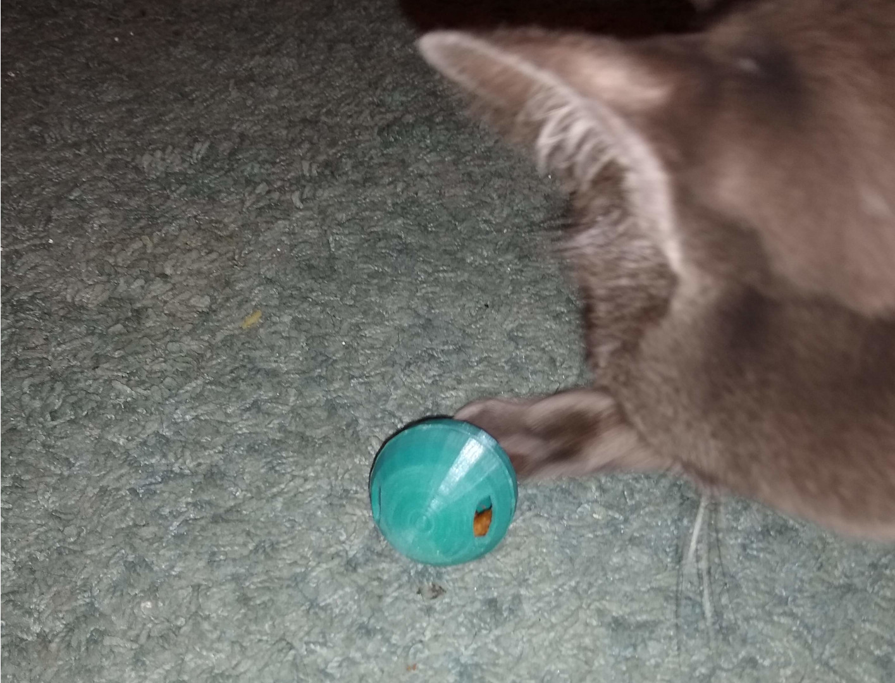

3DPrint Catball feeder

I have been using a device like this for a few years now, it reduces the ability of the cat to inhale treats. Sure it sounds a bit like the ghost of Christmas past rattling chains and dragging weights across the hard floor but it is still better than the cat screaming at you for more treats five seconds after you just gave them some.
So this is a 3dprinter recreation of the same sort of device, we have a ball cavity to fill with treats and a couple of holes to let them out slowly with enough vigorous rolling. The simple large screw thread lets you open and lock the ball and works quite well, it has survived cat and foot abuse without separating. So you simply open ( using the holes as a grip point ) scoop some treats into the half with no holes and then screw it closed again.
Ideally you want a treat similar in size and shape to a "Dreamies" cat treat, the hole is scientifically designed and tested so that such a shaped treat can only fall out when the correct orientation is achieved though aggressive perturbation of the device providing optimal cat exercise.
It should print OK without any supports but the roof of each dome will probably fall slightly and need a bit of clean up. However as this is just on the inside it is an acceptable print flaw. I'd recommend 100% infill so it is less likely to be crushed when you inevitably step on it.
PLA filament is reasonably food safe and my cat keeps trying to chew the prints and any discarded stringing filament anyway. Still it is up to you what you print it with and you can get safer filament and print heads if you want. Mostly you are going to get cat treat dust build up inside which happens with the store bought ones anyway and requires the occasional clean. This is a dispenser rather than a food bowl that your cat will be licking, so I don't think it is that big of a risk.